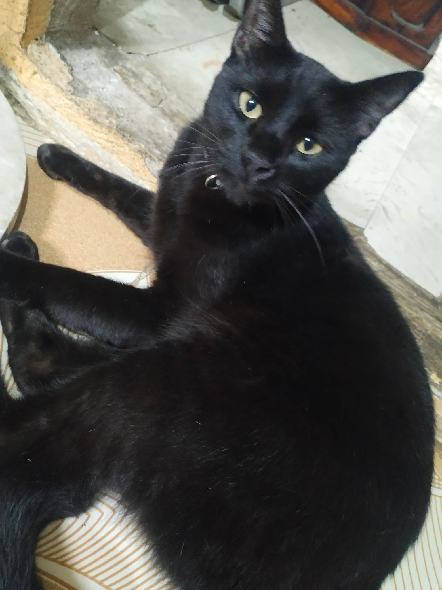
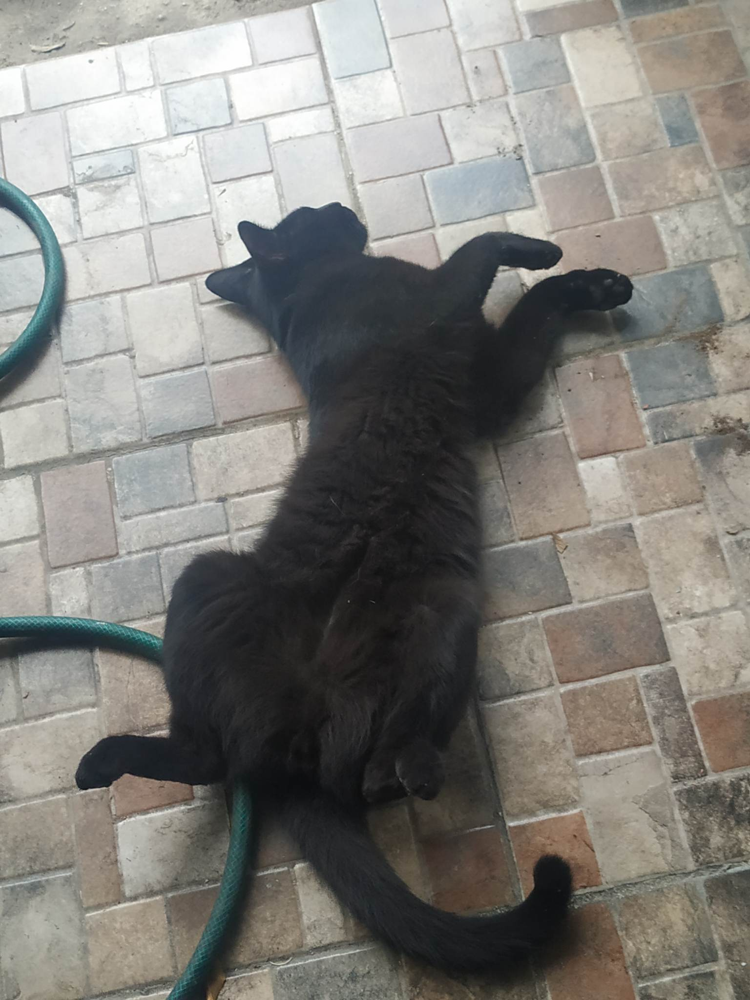

rescatea mi gato en un terreno baldio el cual estaba atras de la casa de un amigo , al principio lo confundimos con su gato pero nos percatamos que el era de color negro desde el primer momento negre jamas se puso violento al contrario queria que lo ayudaramos por que en ese momento se encontraba en un estado deplorable y con mi ayuda y la de mi amigo pudimos darle una buena vida a negre
le puse negre por una razon en especifico , no sabia que sexo era (Hasta la fecha Desconozco ) y para no nombrarlo con algun nombre masculino o femenino le puse negre
